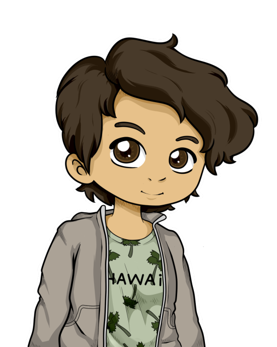

Ivan et Samy arrivèrent au lycée à 17h30.
 Hey ! Alexis ! On a besoin de toi !
Hey ! Alexis ! On a besoin de toi !
 Pour ?
Pour ?
Est-ce que tu sais tracer un téléphone ?
Quoi ? Tracer un téléphone ? Bah ouais je peux le faire, mais euh pourquoi ?
 Pour retrouver Léopold !
Pour retrouver Léopold !
Il est sûrement juste malade, et puis ça prend du temps…
Toi aussi tu sais alors…
Je sais quoi ?
Te fous pas de nous !
Un grand sourire s’installa sur le visage d’Alexis.
Je vois pas du tout de quoi vous parlez les gars… Et puis franchement c’est pas comme si il était à la tête d’une société secrète ou quoi. Faut vous détendre hein, pas la peine de le stalker sur les réseaux sociaux à chaque fois qu’il à la chiasse ! Bon par contre, je suis un peu pressé je dois…
Tu vas nulle part tant que tu nous as pas dit où il est.
 Ah ! Vous voilà ! Alors comme ça on sèche la SI ?
Ah ! Vous voilà ! Alors comme ça on sèche la SI ?
À tout hasard, t’as pas vu Léopold ?
Non… Y avait beaucoup d’absents aujourd’hui. Dont vous d’ailleurs !
Bon, bah je vais vous laisser hein… Y’a Mathis qui m’attend.
Bon écoute Camille… là tu vois, on a une urgence. Pourquoi tu n’en parlerais pas à Matéo ?
Parce qu’il était absent.
Il a disparu lui aussi ?
Non, il m’a envoyé un message ce matin pour me dire qu’il était malade.
Malade hein ? On va voir ça…
---------------------------------------------------------------------------------------
TOC TOC TOC
 Oui ?
Oui ?
Ouvre c’est Samy !
 Salut… Oh salut Ivan.
Salut… Oh salut Ivan.
Yo.
Mec, Léopold a disparu, tu peux nous aider ?
Bah… Je suis un peu occupé et…
Parfait ! On veut que tu le stalk pour retrouver sa dernière trace virtuelle !
Bon… entrez.
Ils s’installèrent dans la chambre de Matéo. Elle était décorée d’un étrange papier peint, représentant plusieurs personnages de jeux vidéo. Matéo s’assit sur sa chaise, bousculant une pile de tasses vides sur son bureau. Samy et Ivan s’assirent sur son lit.
Pourquoi vous venez chez moi, juste pour faire une putain de recherche sur Internet ?
Parce que tu en connais les coins les plus sombres, et que retrouver des gens grâce à peu d’info, c’est probablement ton seul talent.
Humff…
Je sais pas comment je dois le prendre… Mais bon je veux bien vous aider. Je consulte régulièrement un forum d’élite, où nous étudions avec sérieux ce genre de problèmes… Voyons voir si nous pouvons le retrouver. J’ajoute son Facebook, et voilà ! Nos agents vont tenter de trouver quelque chose.
Matéo… T’es sur JVC là…
Humff.
Bah oui ! L’élite de la nation ! Comme la SI !
Matéo plaqua alors ses mains sur sa bouche.
Oub… Oubliez ça, je v… vais me faire un caf… café. Restez là, j’arrive...
Il quitta sa chambre, descendant les escaliers dans un vacarme aberrant.
Humff !
C’est quoi ce bruit depuis tout à l’heure ?
Ça vient de son armoire je crois…
Samy se dirigea vers ladite armoire et tendit l’oreille : le bruit ressemblait à un gémissement étouffé.
Oh merde… On est chez Matéo mec, j’ai genre pas envie d’ouvrir du tout !
Allez ! Grouille avant qu’il revienne !
Samy ouvrit la porte, et écarquilla les yeux.
Oh merde…
Une (trop) jeune fille nue était ligotée, et avait un bâillon. Elle était accroupie sur un gode, l’empêchant de s’asseoir. Dès que la porte fut ouverte, elle s’effondra sur le sol.
Matéo va nous tuer…
Je vais tuer Matéo…
Ils la détachèrent et lui donnèrent des vêtements pris dans ceux de Matéo.
Comment tu t’appelles ?
 Xydoé
Ah… d’accord… et d’où tu viens ?
De Amlaetxhis.
Amlae… Quoi ? Matéo t’a droguée ?
Non, il m’a trouvée dehors. Je me suis enfuie.
Donc Matéo trouve une petite fille dehors, qu’est-ce qu’il fait ? Il la ramène chez lui, et la torture pour ses plaisirs malsains. C’est logique !
Sérieusement ? Ça t’étonne ?
Bon. Dis, Xyodé
Xydoé…
Est-ce que tu as vu Léopold ?
Qui est-ce ?
Un grand type vachement fort, avec un visage assez carré, et des cheveux…
Sa voix mourut dans sa gorge. Léopold. Il n’en revenait toujours pas qu’il ait pu lui cacher quoi que ce soit. La voix de Xydoé le tira de ses songes.
Non désolé, je connais juste maître Friedmann. Je peux vous mener à lui si vous voulez…
Je le connais pas, ton boss, mais si tu penses que ça peut nous aider, on y va.
Par contre la nuit tombe et j’aimerais bien dormir avant. Faut qu’on trouve quelque part où dormir, et je peux pas vous héberger, y a ma grande sœur qui squatte chez moi.
Je peux pas non plus, j’ai oublié mes clés en partant ce matin.
Heureusement, moi je peux !
Matéo se tenait sur le pas de la porte de sa chambre. Il avait un sourire cruel, de grands cernes sous ses yeux, et dégageait une forte odeur de café.
Alors comme ça vous voulez voler mes amies… Vous n’avez pas de cœur !
Son visage passa du sadisme, à la colère.
Mec ! T’es un grand malade ! T’as vraiment besoin de te faire soigner ! Si tu ne nous laisses pas partir tout de suite, tu vas pouvoir préparer les deux sucres !
Mais je vous en prie, allez-y. et surtout, ne revenez JAMAIS !
Samy, Ivan et Xydoé dévalèrent les escaliers, quittèrent la maison, et entrèrent dans la voiture de Samy en moins de temps qu’il n’en faut pour l’écrire (18 secondes).
Où on va du coup ?
Tu penses qu’Ambra pourrait nous héberger pour une nuit ?
Attends je lui demande.
BIIIIP BIIIIP BIII clic
Allô, Ambra ? C’est Ivan.
 Je sais lire merci. Pourquoi tu m’appelles ?
Je sais lire merci. Pourquoi tu m’appelles ?
On a ramassé une petite fille, Samy et moi, et on cherche un logement pour la nuit. Tu pourrais nous accueillir ?
Tu me demandes sérieusement d’héberger 2 garçons et 1 fille comme ça, là ?
Oui.
Ça marche ! À toute suite !
Elle a dit oui ! Allez, on y va !
C’est vraiment n’importe quoi cette histoire…
Grâce au super GPS de Samy à seulement 19€99* *prix hors taxes. Voir conditions en magasin, ils arrivèrent jusque chez Ambra. Ils toquèrent, et elle vint leur ouvrir.
Allez-y entrez, y’a des chips. Salut toi, t’es toute mignonne ! Comment tu t’appelles ?
Xydoé.
Trop mignon !
Samy passa devant Ivan, un peu jaloux qu’Ambra s’attarde autant sur Xydoé, et aussi peu sur eux. Enfin, sur lui. Soudain, Baptiste sortit de la cuisine, suivi par une fille aux longs cheveux.
Salut Maëlle, qu’est-ce que tu fais ?
 Un caméo.
Un caméo.
Baptiste s’effondra dans le canapé, complètement ivre, pendant que Samy et Ivan s’assirent en tailleur par terre. Vu le volume de la musique, ils devaient être en train de faire une mini soirée à trois. Samy était déçu qu’Ambra ne l’ai pas invité à rejoindre la fête. Finalement, heureusement qu’Ivan avait oublié ses clés.
Bon, bah pour la nuit de sommeil on repassera…
T’inquiètes, je vais pas faire le con, à minuit max je suis couché.
Il est 2h du matin, et personne n'est couché. La soirée a clairement dégénéré, et il est fort possible que nos... « héros » ne soit pas en forme pour le reste de la journée…
Baptiste ?
 Ouais ?
Ouais ?
Pourquoi t'es à poil ?
Euh… J'ai oublié.
D'accord… Sinon t'as pas vu Samy ? Je le retrouve pas.
Il est parti… par là… attend non ! Par là.
Son bras faisait des vas-et-viens de gauche à droite, pointant tantôt la cuisine, tantôt des escaliers menant à la cave.
Ok, merci…
De rien Romain.
Non, moi c'est Ivan.
Oups pardon.
Ivan se dirigea vers la cuisine, trébucha sur un chat, avant d'arriver dans la petite pièce. Il n'y avait rien de bien intéressant à l’intérieur : un four, un frigo, une armoire, Maëlle complètement défoncée, un lave-vaisselle, et une poubelle. Rien qui puisse l'aider à retrouver Samy.
Pendant ce temps à l'étage :
Et donc, tu fais quoi dans la vie ?
Bah je suis lycéenne... T'es con un peu, non ?
Ouais c'est vrai... ça doit être les 5 grammes que j'ai dans le sang...
Mais pourquoi tu voulais voir ma chambre au fait ?
Bah parce que je suis jamais venu, je visite juste...
Ah ouais d'accord... Mais alors pourquoi t'es en caleçon ?
Parce qu’il fait vachement chaud...
Ah ok. Je peux ouvrir la fenêtre si tu veux !
Non t'inquiètes, par contre tu voudrais pas qu’on s’allonge ?
Écoute, je sais ce que tu veux, et il est hors de question que…
Et moi je sais que dans 4 lignes max je te baise !
Tu sais, je trouve que c’est vraiment courageux ce que vous faites Ivan et toi, mais je dois te mettre en garde : Si vous poursuivez votre quête, vous allez être confrontés à des choses bien plus dérangeantes qu’une bande d’ados défoncés…
Du coup on baise ?
Mais carrément !
Ils se couchèrent sur le lit, et Ambra se déshabilla. Samy ôta ce qui lui restait de dignité, et ils commencèrent à entremêler leurs membres, dans des caresses torrides.
Samy…
Quoi ?
Tu t’es trompé de trou…
Tant pis. J’y suis, j’y reste.
Ils pratiquèrent un coïte tantôt violent, tantôt doux, mais très respectueux. Jusqu’à ce que…
Attend… Ralentis... Je dois prendre un truc…
Elle sortit de sa table de nuit un énorme gode, avec une décoration très mignonne. Il était rose, avec des étoiles bleues, et un petit gland en caoutchouc jaune. Il avait une grande ventouse sur sa base sur laquelle on pouvait lire « Kidum ».
Ok, là on va pouvoir s’amuser.
Oh merde !
Pendant ce temps, au salon :
Mais t’as raison Ivan ! Faut pas laisser tomber tes potes. Et si Léopold est sur la lune, mais va le chercher gros…
T’es défoncé Baptiste…
Regarde, perso si Romain était en danger, je réfléchirais même pas ! c’est la seule personne qui comprend mon amour pour la musique…
Baptiste tu bandes. Et t’es toujours à poil.
Ça doit être la musique, ou Romain, ou les deux…
Ça n’a aucun rapport avec Xydoé qui te suce depuis 20 minutes ?
Non vraiment. Aucun.
Aucun ?
Aucun.
Ouf ! J’ai cru que t’étais aussi taré que ce connard de Matéo.
Sa… Salut les m… Mecs…
Eh bah t’es revenus finalement ! Qu’est-ce que tu foutais ? Et pourquoi tu boites ?
Trop long à… aïe ! à expliquer…
On n’a toujours pas dormi, et il est déjà 3h30… Comment on va faire pour demain ?
T’en fait pas, j’ai réussi à avoir des informations. Pour l’instant dors, et je t’explique ça demain. Si tu me cherches, je serai dans la voiture.
Ok, bah écoute à demain.
Ivan bailla et s’endormit lourdement sur Baptiste, sentant son sexe chaud contre sa joue.
Il se réveilla doucement, allongé sur une table. Il n’était plus chez Ambra, mais à la cafétéria. Il se redressa, et, ébloui par le soleil, il aperçut une silhouette massive. Non… c’est impossible… c’est…
Léopold ! Tu m’as tellement manqué !
Il lui sauta dans les bras, et Léopold le rattrapa.
 Je suis désolé… Je ne peux pas te confier ça. Nous ne serons plus jamais les mêmes si jamais tu…
Je suis désolé… Je ne peux pas te confier ça. Nous ne serons plus jamais les mêmes si jamais tu…
CLAC
La gifle. Y’a pas meilleur moyen pour réveiller quelqu’un !
Est-ce que tu te rends compte à quel point tu es un trou du cul ? Espèce de sous race de merde !
Wow ! Eh ! Calme-toi ! Xydoé nous attends, on doit y aller. Je te rappelle qu’on cherche Léopold hein.
Oui oui… On va où du coup ?
Si Léopold a disparu c’est parce qu’apparemment il avait des obligations. Mais genre, de grosses, GROSSES obligations. Pour tirer ça au clair, on va devoir coopérer avec un type un peu spécial.
Ah oui ? Qui ça ?
Yann. Un grand philosophe il paraît. D’après ce que j’ai compris, il y a une histoire de conflit mondial, d’organisation secrète, et de science…
Hein ??
Bon en fait j’ai pas compris grand-chose, mais on a une piste, alors c’est parti !
Attend Samy !
Quoi ?
Où est ce que tu as eu toutes ces informations ?
J’ai vendu mon cul.
Lol haha !
Ouais… Lol…